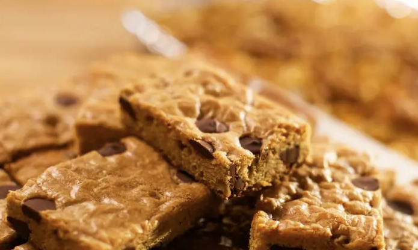

Home
Blondies

Description
Blondies are a type of dessert bar similar to brownies
Instead of chocolate, however, the flavor depends on brown sugar
Ingredients
- 1 1/2 sticks (12 tablespoons) unsalted butter, melted and cooled, plus more for the pan
- 1 1/2 cups all-purpose flour
- 1 teaspoon baking powder
- 1/2 teaspoon kosher salt
- 1 1/2 cups packed dark brown sugar
- 1 tablespoon vanilla extract
- 2 large eggs, lightly beaten
- Flaky sea salt, to garnish
- 1 cup plus 2 tablespoons bittersweet chocolate chips (optional)
Steps
- Preheat the oven to 350 degrees F. Butter a 9-by-13-inch baking pan. Line the pan with parchment, leaving an overhang, then butter the parchment.
- Whisk the flour, baking powder and salt together in a medium bowl and set aside. In another bowl, whisk the melted butter and brown sugar together until combined. Add the vanilla and eggs and stir to combine. Fold the flour mixture into the wet ingredients, being careful not to overmix. Fold in 1 cup of the chocolate chips. Pour the batter into the prepared pan and smooth the top. Scatter the remaining 2 tablespoons chocolate chips over the batter.
- Bake until the top is a light golden brown, 20 to 25 minutes, being careful not to overbake. Let cool on a wire rack. Remove the blondies from the pan and transfer to a cutting board. Cut into rectangles, sprinkle with flaky salt and serve.